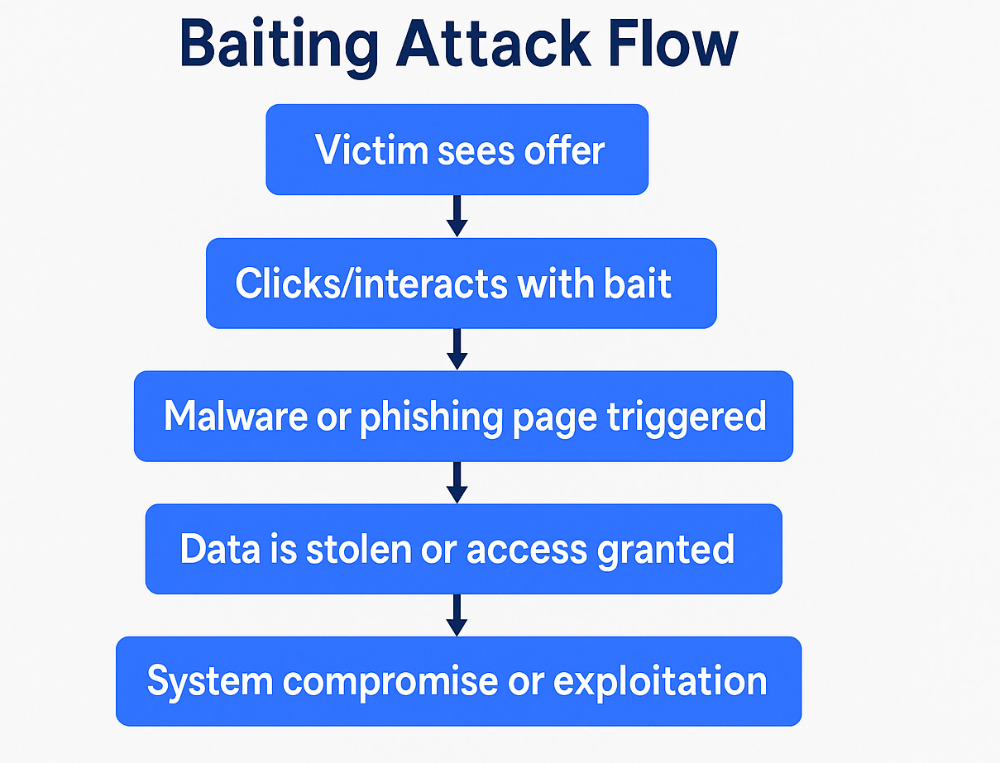
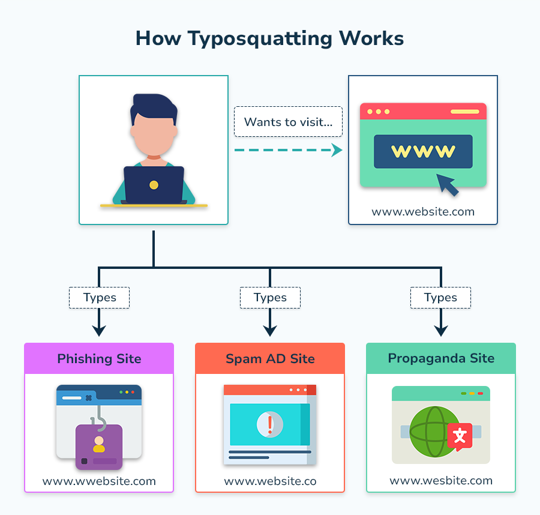
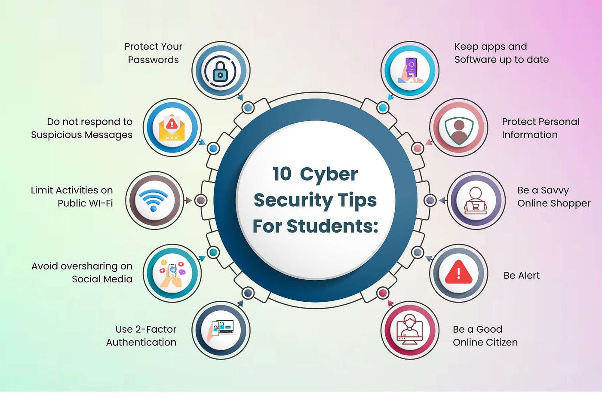

Educating the public on cyber threats and digital safety
Explore ResourcesThis website is designed to educate the public about cybersecurity threats and social engineering attacks. Explore videos, posters, questionnaires, and resources to improve your digital safety awareness.

Attackers rely heavily on curiosity, free offers, and a lack of security awareness to manipulate individuals into interacting with malicious content or devices. Some individuals may be going through hard times or trying to save money. By targeting these users, attackers can reach some of the most vulnerable people. Think about free offers, and a lack of security awareness to manipulate individuals into interacting with malicious content or devices.

Attackers register fake websites with slightly misspelled URLs of legitimate sites. Unsuspecting users may type the wrong URL and land on these sites, where they can be tricked into giving away personal information or downloading malware. This exploits users who do not check URLs carefully or are in a hurry.
